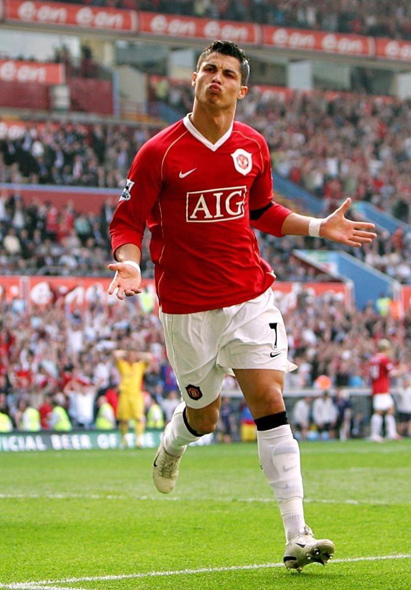
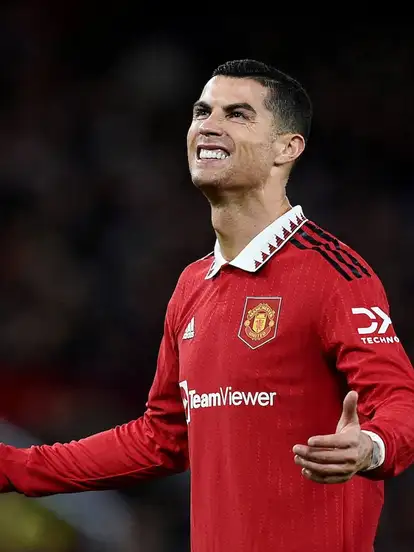
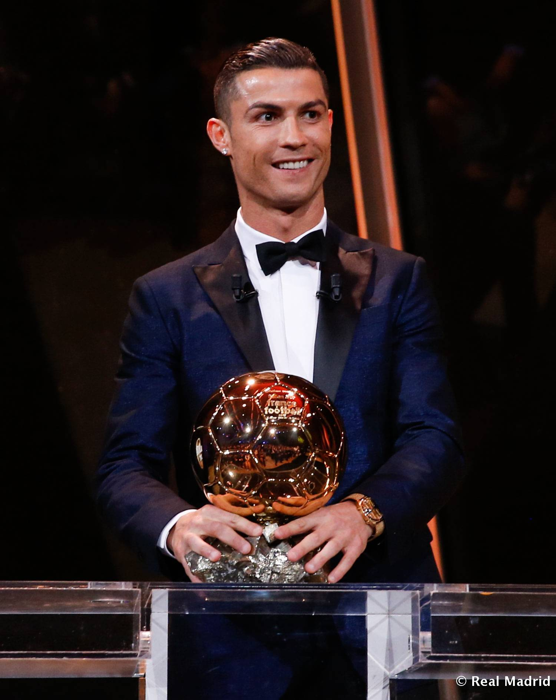

Biografia
(Cristiano Ronaldo dos Santos Aveiro; Funchal, Madeira, 1985) Futbolista portugués considerado uno de los mejores delanteros del panorama actual. Además de los numerosos títulos y distinciones individuales obtenidos a lo largo de su trayectoria en el Manchester United (2003-2009) y en el Real Madrid (desde 2009), tuvo el honor de ser el futbolista por el que más dinero había pagado nunca un club: en junio de 2009, el traspaso al Real Madrid costó al club blanco 94 millones de euros, hasta ese momento la cifra más alta de la historia.
Cristiano Ronaldo nació en un barrio obrero en la isla portuguesa de Madeira, en el seno de una familia de tres hermanos. Desde muy pequeño mostró sus excepcionales aptitudes para el fútbol: a los ocho años jugaba en el equipo de La Andorinha, y a los diez se lo disputaban ya los dos equipos mayores de la isla, el Marítimo y el Clube Desportivo Nacional; el padre del jugador decidió que ingresara en este último. Allí progresó de forma meteórica, y a los 16 años, tras realizar unas prueba, se incorporó al Sporting de Lisboa y se trasladó a vivir a la capital portuguesa.
Trayectoria
Sporting de Lisboa
Fue el club en el cual debuto como profesional a los 17 años2222 en el año 2002

Manchester United
El Barça y la Juve lo pretendían, aunque finalmente fue el Machester quien lo fichó en el verano de 2003 tras pagar 17,5 millones de euros de traspaso. Cristiano permaneció en el club durante 6 temporadas donde obtuvo 3 Premier Leagues, 1 Copa de Europa y 1 Mundial de Clubes.
Real Madrid
El 11 de junio de 2009 el Manchester United aceptó la oferta de 93,9 millones de euros del Real Madrid C.F. El traspaso de Cristiano Ronaldo se confirma el 26 de junio y se convirtió en el traspaso más caro de la historia del fútbol. El 6 de julio fue presentado en el Estadio Santiago Bernabéu ante 80.000 personas. Debutó en el campo el 21 de julio con una victoria por 1-0 sobre el Shamrock Rovers. Su primer gol llegó una semana después de penalti en la victoria del Madrid por 4-2 sobre el LDU Quito. El 29 de agosto, se estrenó en la Liga con un gol contra el Deportivo La Coruña al que ganaron 3-2; el 15 de septiembre, anotó dos tiros libres en la victoria por 5-2 frente al Zürich, sus primeros goles en la Champions League para el Real. Tras anotar otro gol en un partido de Liga ante el Villarreal, se convirtió en el primer jugador del club en anotar en sus primeras cuatro apariciones.

Juventus
El 20 de abril de 2019, La Juventus de Turín gano 2-1 ante la Fiorentina conquistando matemáticamente su 35 título de campeón de Italia, el octavo consecutivo y el primero de la ‘era’ del portugués Cristiano Ronaldo. En sus tres temporadas en la Juve, Cristiano ganó dos ligas, una Copa y una Supercopa italianas, y marcó 101 goles en 134 encuentros.

Manchester United
En agoto de 2021, se anuncia que el goleador portugués, por el que también se interesó el City, abandona la Juventus y vuelve al Manchester United, club con el que conquistó la Champions de 2008. El contrato liga a CR7 con el United por dos temporadas. El club inglés paga 15 millones de euros a la Juventus más ocho millones en variables, lo que sumaría la cantidad que a la sociedad italiana le faltaba por amortizar de los 127 millones de euros que pagó al Real Madrid en el verano de 2018.
Al-Nasar
El club Al Nassr de Arabia Saudí anunció oficialmente el viernes 30 de diciembre de 2022 el fichaje de Cristiano para las dos próximas temporadas, después de que el portugués rompiera su relación con el Manchester United durante el Mundial de Qatar. El Al Nassr, uno de los mejores equipos de Arabia Saudí, logró ser campeón de la liga nacional en varias ocasiones.

Titulos
Ronaldo ya suma 34 estrellas a nivel de clubes y selección, pues ha conquistado 5 Champions League, 1 Eurocopa, 2 Liga de España, 2 Serie A de Italia, 3 Premier League, 1 UEFA Nations League, 2 Copa del Rey, 1 FA Cup / Copa de Inglaterra, 3 Supercopa de Europa, 2 Community Shield / Supercopa de Inglaterra, 2 Supercopa de España, 2 Supercopa de Italia, 1 Supercopa de Portugal, 4 Mundial de clubes, 2 Copa de la Liga de Inglaterra, 1 Coppa Italia.
¿Quieres saber mas sobre el?
SIUUUUUUUCalma que estamos mejorando la pagina